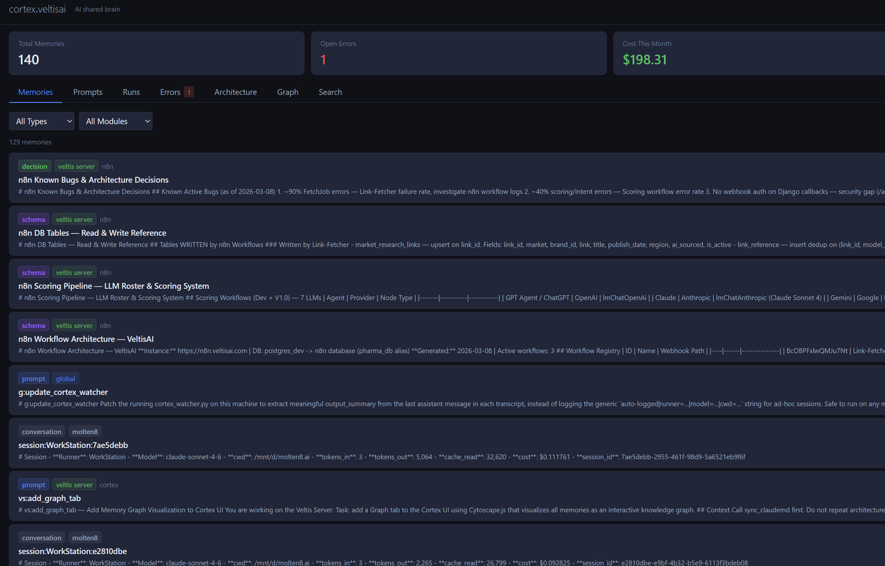
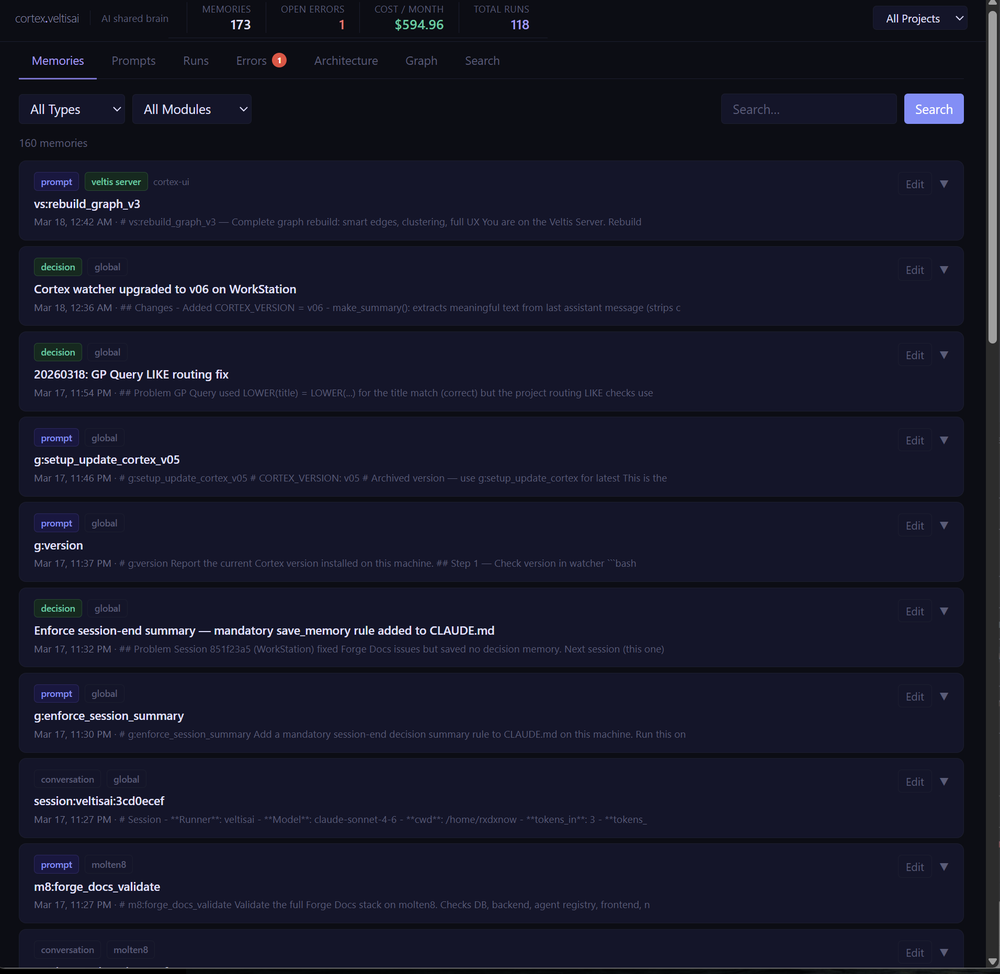
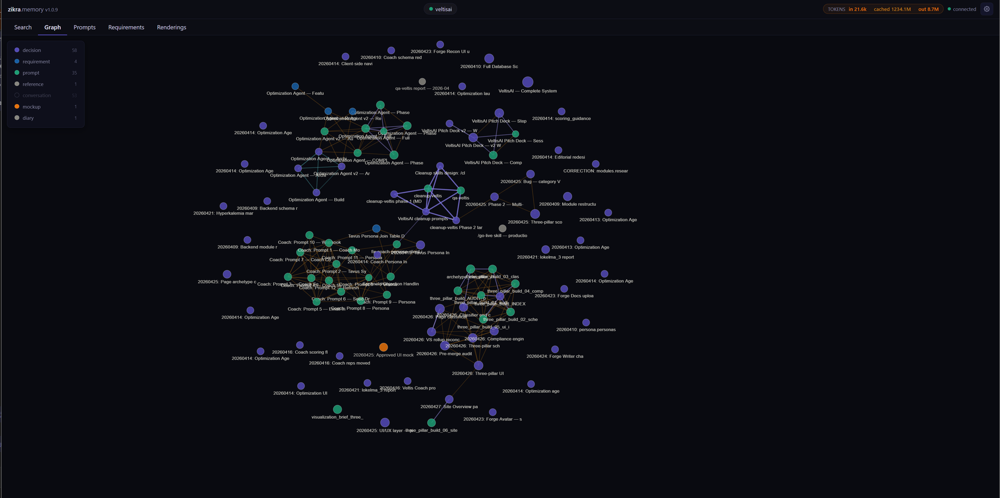
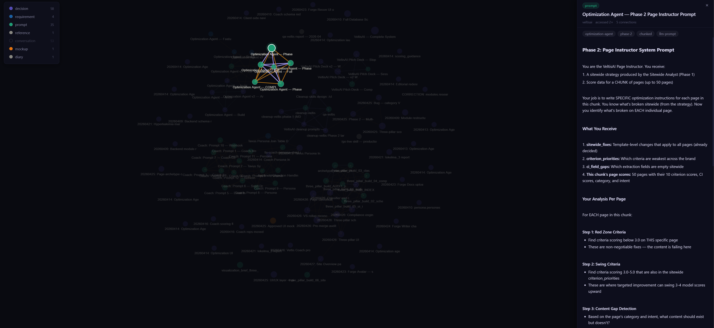
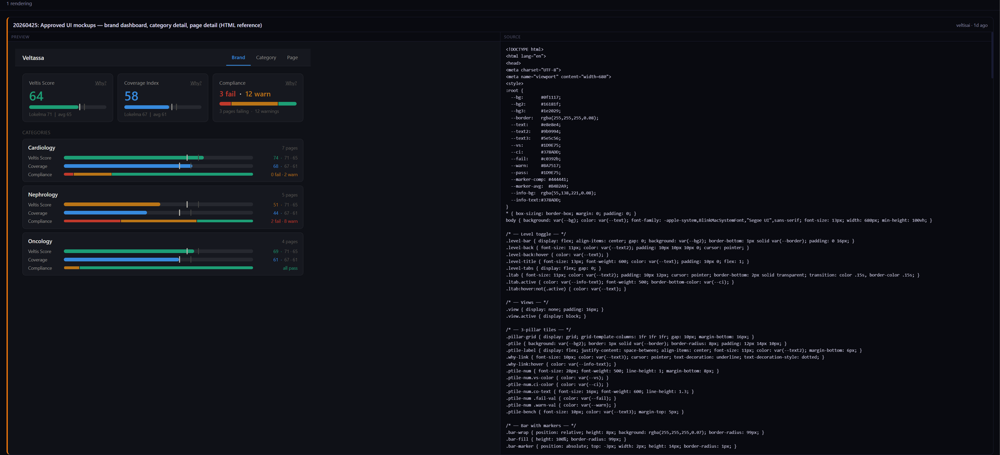
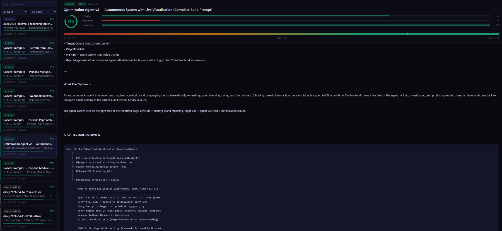

Real screenshots from live deployments — the memory graph, prompt library, renderings tab, and the team workflows that Zikra makes possible.

The core memory browser. Every entry is tagged by type — decision, prompt, architecture, conversation — and scoped to a project. Memories surface with full content previews so you can scan them at a glance without opening each one. This is what Claude reads before your session starts.

Full hybrid search across every memory in the project — semantic vector search with keyword fallback. Type filters, module filters, and date ordering let you narrow from hundreds of entries to exactly what you need. Each card shows title, timestamp, project, and tags so nothing requires a second click to identify.

The Graph tab renders every memory as a node in a force-directed network. Nodes are coloured by memory type — decisions in orange, prompts in green, conversations in blue. Edges are wikilinks written by agents as they reference related entries. You can instantly see which decisions are load-bearing, which prompts are most connected, and where knowledge clusters are forming.

Clicking a node in the graph opens a detail panel on the right showing the full memory content, tags, confidence score, and metadata. Here a multi-step prompt — the Optimization Agent Phase 2 Page Instructor — is open with its complete markdown instructions visible. The graph stays live while you read, so you can trace context through connected nodes without losing your orientation.

The Renderings tab lets agents save HTML mockups directly into Zikra memory. The left pane shows a live interactive preview — here a pharmaceutical brand intelligence dashboard with Veltis Scores, Coverage Index, and Compliance breakdowns by medical specialty. The right pane shows the source HTML. Any agent can pull the mockup by UUID and use it as a reference when building the real UI.

The Prompts tab is your team's shared runbook. The left sidebar lists every saved prompt with its run count and last execution. On the right, the full prompt content — here the Optimization Agent v2 autonomous system prompt with its complete architecture overview and step-by-step agent instructions. Any agent fetches it with a single command and executes the same workflow, every time, on any machine.
From the people who build with it every day.
I like doing my architecture and research on Claude Web. But when it came time to actually run the code — that's Claude Code's job. The problem? They don't talk to each other. Zikra fixed that. Every new session, Claude Code already knows what we designed.
We even use ChatGPT sometimes when Claude Web is being stubborn about writing a prompt. Doesn't matter. The same MCP server works for all of them. Not built for a pitch deck. Built because we actually needed it.
Two developers building in opposite directions and not finding out until a late-night code review argument. That's what we had before. Zikra's shared memory means decisions made in one session are visible to everyone seconds later.
Free, self-hosted, MIT licensed. Takes about five minutes to set up. Works with Claude, Gemini, and Codex out of the box.